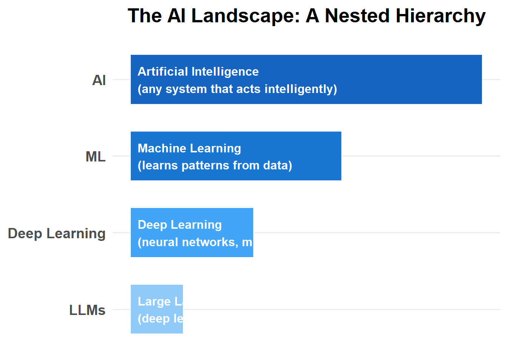
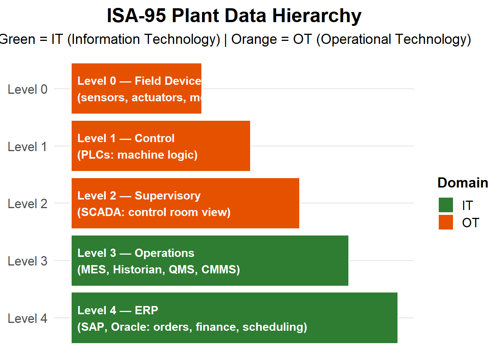
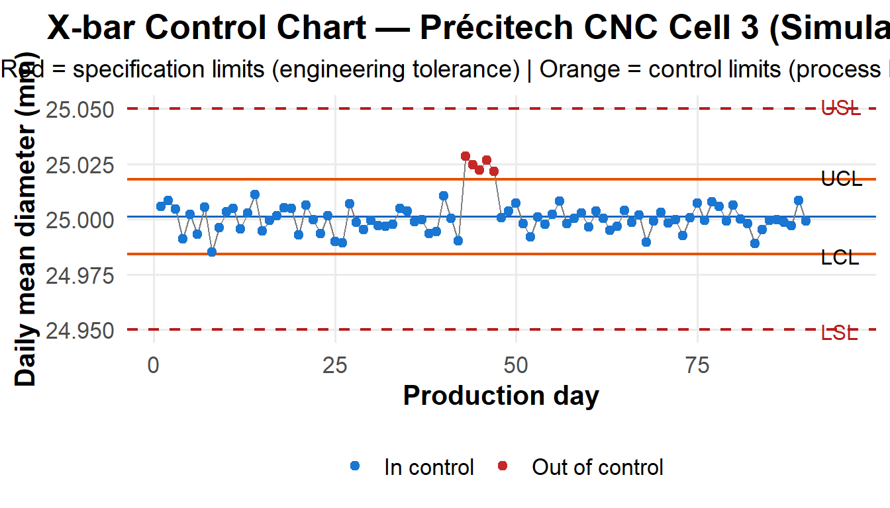
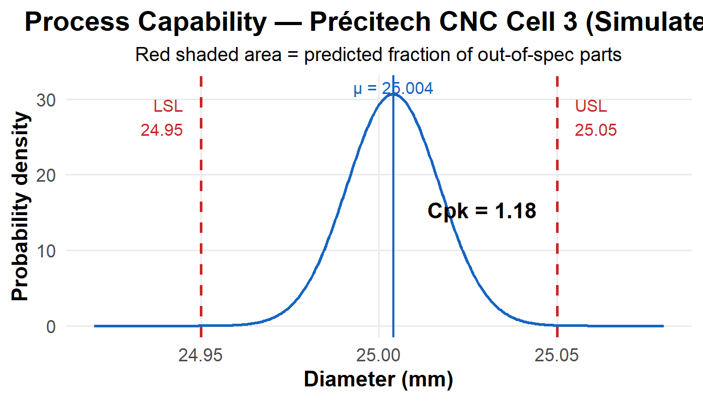
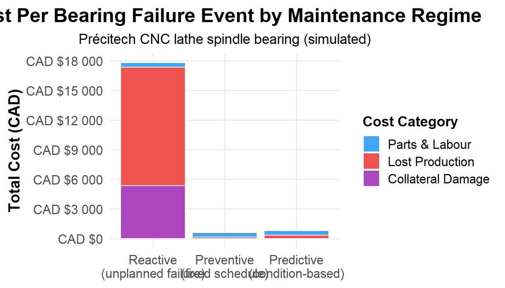
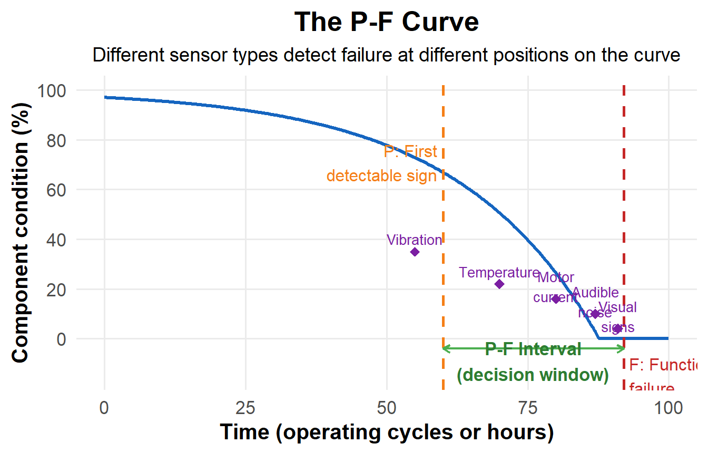
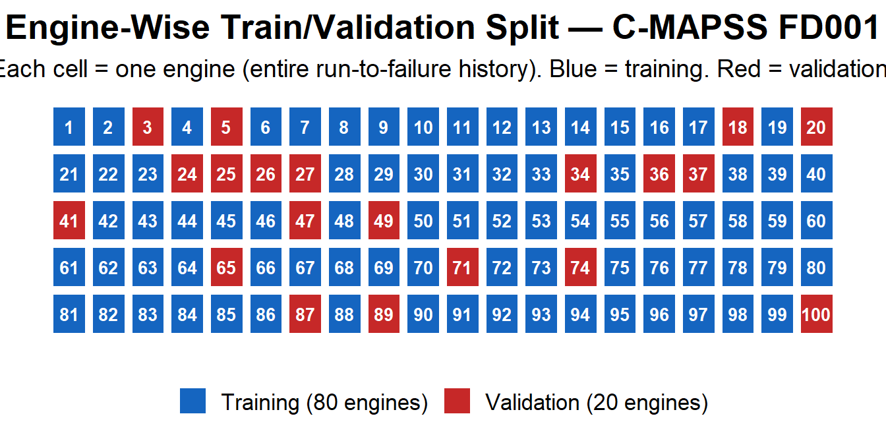
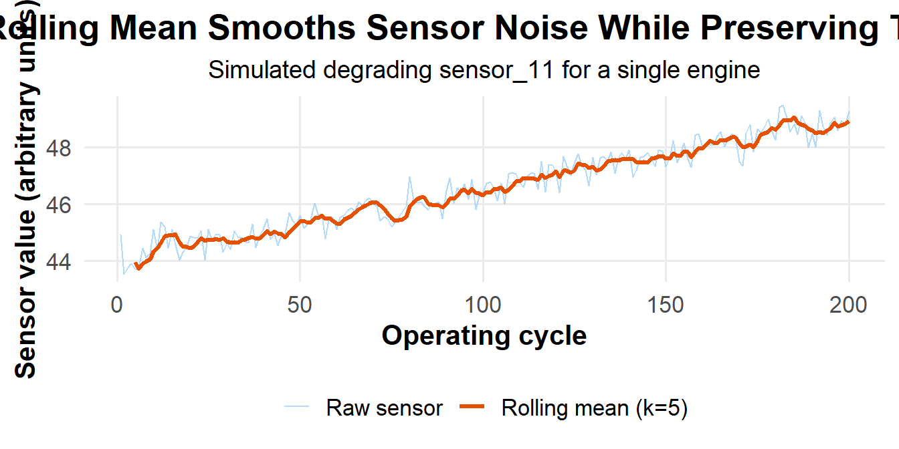
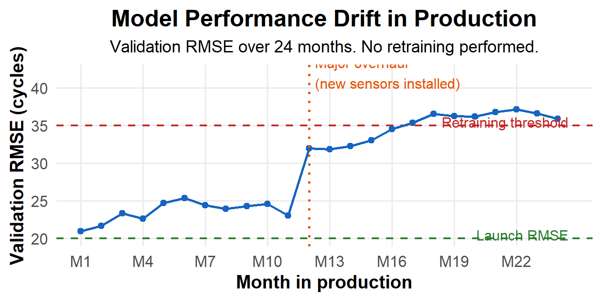

18 AI Tools for Manufacturing Engineering
18.1 Chapter Overview
This chapter runs over six weeks — twelve hours of classroom theory paired with twelve hours of hands-on laboratory work (see Section 19.6). By the end of the six weeks you will have built, trained, and publicly deployed a predictive-maintenance web application using real industrial sensor data. That app will be on your résumé.
The technical path moves from wide to narrow: Week 1 surveys the entire AI landscape and teaches you to use the tools you already have access to (large language models) wisely. Week 2 grounds you in the messy reality of plant data and refreshes your statistical process control. Weeks 3 through 5 build and deploy a machine-learning model for predicting when a turbofan engine will fail — the same class of problem that GE Aviation, Pratt & Whitney, and every major Tier-1 automotive supplier runs on their production lines. Week 6 steps back to examine ethics, the broader landscape, and where this field is heading.
The companion lab handout (Section 19.6) provides the step-by-step exercises, Python code, and deliverable instructions for each week.
Before You Start: Think about the last time a machine at your co-op, at home, or on a plant tour broke down unexpectedly. How much warning was there? What would have been different if you had known two weeks in advance that it was going to fail?
18.2 Week 1 — AI Foundations for Manufacturing Engineers
18.2.1 Learning Objectives
| By the end of this week, you will be able to… | Assessment | |
|---|---|---|
| 1.1 | Distinguish AI, machine learning, deep learning, and large language models, and give a manufacturing example of each | Self-check Q1–Q2 |
| 1.2 | Explain in plain language how an LLM generates text and identify three reasons it fails | Self-check Q4 |
| 1.3 | Determine what plant data is safe to paste into a public LLM and what is not | Self-check Q3 |
| 1.4 | Write a structured prompt using the R-C-T-C-F pattern that produces useful engineering output | Lab Week 1 Exercise 1 |
| 1.5 | Use an LLM to generate Python code you understand well enough to debug | Lab Week 1 Exercise 4 |
18.2.2 The AI Landscape
The terms “AI,” “machine learning,” “deep learning,” and “large language model” are used interchangeably in headlines. They are not the same thing. Understanding the actual relationship will save you from choosing the wrong tool — and from being fooled by vendor marketing.
Figure Figure 18.1 illustrates the key insight: every LLM is deep learning, every deep learning system is machine learning, and all machine learning is AI — but the reverse is not true. There are AI systems (like the rule-based expert systems used in 1980s industrial diagnostics) that are not machine learning at all.
18.2.2.1 Machine Learning
Definition: Machine learning is the set of techniques that allow a computer to learn a relationship from data, rather than having a programmer write explicit rules.
Manufacturing example: Your CNC lathe at Précitech has been producing transmission shafts for two years. The QMS contains 50,000 parts with their measured diameters paired with the tool age at the time each part was made. You suspect tool age affects diameter — but how, exactly?
A traditional programmer would guess: “Maybe diameter = 25.000 + 0.0001 × tool_age?” and tune constants by hand for years. Machine learning lets you skip the guessing. You hand the 50,000 examples to a linear regression algorithm and it finds the best-fit relationship itself:
\[\text{diameter} \approx 25.0021 + 0.000098 \times \text{tool\_age}\]
Give it a new tool age, it predicts the diameter. The algorithm learned the slope and intercept from the data.
| Technique | Best for | Manufacturing example |
|---|---|---|
| Linear regression | Continuous predictions | Predicting diameter from tool age |
| Logistic regression | Yes/no decisions | Will this part pass inspection? |
| Decision trees | Mixed numeric/categorical data | Route part to rework vs. scrap |
| Random forests | Robust tabular predictions | Predicting machine failure (Week 3) |
| K-means clustering | Grouping similar items | Identifying defect families from inspection data |
| Support Vector Machines | Classification with clear boundaries | Pass/fail from multiple measurement features |
ML is the right tool when you have structured tabular data, a clearly defined output to predict, and you want the result to be explainable. It is the wrong tool when your inputs are unstructured (images, audio, free text) or when you have very little data.
18.2.2.2 Deep Learning
Definition: Deep learning is machine learning that uses neural networks with many layers. The “deep” refers to the number of layers, not philosophical complexity.
A neural network is inspired (loosely) by neurons in the brain: many simple processing units connected in layers, each taking inputs, multiplying them by learned weights, summing them, and passing the result to the next layer.
Manufacturing example: Automated visual inspection on a CNC turning line. The input is a 1024 × 768 pixel image — roughly 786,000 numbers. Whether a surface scratch is a defect depends on the pattern across those numbers, not any single pixel. This is exactly the problem deep learning excels at. A convolutional neural network (CNN) trained on 10,000 labeled images can learn to classify new images with high accuracy. Tools like Roboflow and YOLO make this approachable in an afternoon.
Why didn’t deep learning dominate until ~2012? Three things came together: (1) the internet generated enough labeled images to train large networks; (2) GPUs designed for video games turned out to be perfect for the matrix math inside neural networks; (3) researchers solved technical problems that had prevented deep networks from learning effectively. The 2012 ImageNet competition — won by a deep network called AlexNet — is widely considered the start of the modern deep learning era.
18.2.2.3 Large Language Models
Definition: A large language model is a specific kind of deep neural network trained on enormous amounts of text, with the goal of predicting the next word (or token) given everything before it.
That is mechanically what an LLM does: predict the next token. Then repeat, using the generated token as part of the input for the next prediction. This is called autoregressive generation.
"The cutting tool needs to be" → LLM → "replaced"
"The cutting tool needs to be replaced" → LLM → "because"
... and so onThe model has no plan, no goal, no understanding — just “what token probably comes next, given all the text I’ve seen?” Yet because predicting the next word well requires absorbing grammar, facts, the structure of engineering documents, and the way Python code is written, the implicit “knowledge” encoded in billions of parameters is surprisingly broad.
What LLMs are good at:
- Drafting documents in standard formats (emails, reports, SOPs, FMEAs)
- Summarizing long documents
- Translating between languages
- Explaining concepts at a chosen level of detail
- Generating code in common languages (Python, SQL, R, MATLAB)
- Brainstorming options to evaluate
- Restructuring information (table → prose, prose → table)
What LLMs are bad at:
- Arithmetic — they predict text, not numbers
- Citing real sources — they invent plausible-sounding citations
- Knowing your specific equipment, processes, or customers
- Real-time information (a model with no web access cannot tell you today’s stock price)
- Consistency — the same question twice can produce different answers
- Safety-critical work where the cost of error is high
18.2.2.4 Side-by-Side Comparison
| Property | Machine Learning | Deep Learning | Large Language Models |
|---|---|---|---|
| Typical input | Tabular numbers | Images, audio, sensor streams | Text |
| Typical output | Number or category | Category or another image | More text |
| Training data needed | Hundreds to thousands | Tens of thousands to millions | Trillions of words (already done — you use a pre-trained model) |
| Can you train it in this course? | Yes (Week 4) | No (follow-on course) | No — you use someone else’s |
| Best at | Sensor predictions, quality, scheduling | Vision, sound, complex pattern recognition | Documents, explanations, code generation, summarization |
| Explainability | Often good (readable formula or rules) | Poor (millions of parameters) | Very poor (billions of parameters) |
| Manufacturing examples | Predictive maintenance, yield prediction | Defect detection from images | Drafting SOPs, summarizing reports, generating Python code |
Industry Application: At Ford’s Dearborn Truck Plant, AI systems monitor thousands of sensor channels from body-welding robots. Anomaly detection (a form of ML) runs continuously on each weld. A separate LLM-based assistant helps maintenance planners draft work orders from natural-language descriptions of symptoms. Both tools are in production — they solve different problems, and neither replaces the engineer who interprets the output.
The big takeaway: use the simplest tool that solves your problem. A linear regression you fully understand is often better than a neural network you don’t. An LLM is excellent for drafting documents but a terrible choice for predicting tool wear from sensor data — that is a job for ML.
18.2.3 How LLMs Actually Work — Enough to Use Them Well
You do not need to know the mathematics. You do need a mental model of what happens when you type into a chat box.
18.2.3.1 Tokens
LLMs do not see words — they see tokens, pieces of words. The word “manufacturing” might be one token or two (“manu” + “facturing”), depending on the model’s tokenizer.
A rough rule: 1 token ≈ ¾ of an English word (≈ 4 characters). So a 1,000-word document is roughly 1,300 tokens.
You can see this for yourself at the OpenAI Tokenizer (https://platform.openai.com/tokenizer). Try tokenizing common engineering terms (“Cpk,” “AIAG,” “PFMEA”) versus natural language. Technical jargon gets chopped into many small pieces; common words become single tokens. This affects model performance on highly specialized text.
18.2.3.2 Context Windows
The context window is how much text the model can “see” at once — your entire conversation, including previous messages and its own previous outputs. Modern models have generous windows (hundreds of thousands of tokens, or roughly 500 pages), but free-tier offerings often have smaller limits.
When you paste a 50-page document and ask for a summary, all 50 pages go into the context window. If the document exceeds the window, the oldest content gets silently dropped in some implementations. This is why focused prompts produce better results than document dumps.
18.2.3.3 Training Cutoff and Outdated Knowledge
The model was trained on data up to a specific date — its training cutoff. After that date it knows nothing. If you ask about a software version released last month, an event from yesterday, or a standard revised last quarter, the model either says it does not know (good) or fabricates something plausible (bad).
Some tools integrate web search to extend the model’s knowledge to real time. Free tiers may or may not include this. Always check.
18.2.3.4 Sampling and Why Answers Vary
LLMs do not deterministically pick the single most-likely next token. They sample from a probability distribution, introducing randomness. Ask the same question twice and you can get different answers — sometimes very different ones. For engineering work: do not treat one LLM answer as definitive. Ask the same question two or three different ways and look for consistency.
18.2.4 Why LLMs Fail
Three failure modes every engineer must internalize.
18.2.4.1 Hallucinations
Warning
Critical Concept: A hallucination is when the model produces text that is grammatically correct, confidently stated, and completely false. This is not a bug — it is a direct consequence of how the model works.
The model predicts plausible-sounding text. When asked about something niche or unfamiliar, it still generates text that sounds like the right kind of answer, with no internal “do I actually know this?” check.
Classic engineering hallucinations:
- Inventing ASTM, ISO, or SAE standard numbers that do not exist
- Citing papers that were never written, attributed to real researchers
- Stating cutting parameters for alloys with complete confidence and no source
- Describing features of commercial software that the software does not have
You will deliberately trigger a hallucination in Lab Week 1, Exercise 3. That exercise is designed to create a lasting memory — after you have personally caught an LLM confidently lying, you will never paste an LLM citation into a technical memo without checking.
Defence: Verify anything that matters. If the model cites a standard, look it up. If it gives a number, find the source. Use the model to draft, then verify — never to do final research.
18.2.4.2 Math Errors
LLMs are language models, not calculators. They learn to produce text that looks like arithmetic — but they do not compute internally. Simple sums often come out right; multi-step calculations frequently do not.
If you ask an LLM to compute Cpk given a mean, sigma, USL, and LSL, you may get the right answer, the wrong answer, or a wrong answer with a correct-looking setup. Do not trust LLM arithmetic on safety-critical decisions. Use the LLM to set up the formula; do the calculation yourself or with a verified script.
Some models can call an external Python interpreter to handle math reliably. If your tool offers this capability, use it.
18.2.4.3 Sycophancy
LLMs are trained to be helpful and agreeable. If you push back on a correct answer, the model often capitulates and gives you a wrong one. If you confidently state something incorrect, the model frequently agrees.
This is dangerous for technical review. Do not ask “is my reasoning here correct?” — that biases the model toward yes. Instead ask “what is wrong with this reasoning?” or “what would a critic say?” You will get genuinely useful pushback.
18.2.5 Intellectual Property Risk in Industrial Settings
Warning
Career Risk: Mishandling intellectual property with AI tools is a fireable offence at most manufacturers. Read this section twice.
The default assumption to adopt: anything you paste into a public LLM (Claude.ai free tier, ChatGPT free tier, Google Gemini, free Copilot) may be:
- Retained by the provider
- Used to improve future model versions
- Accessible to the provider’s employees
- Stored in a jurisdiction with different data protection laws than yours
Even when the provider’s policy says they do not use your data for training, your data has still left your plant’s network. For many things this is acceptable. For some things it is a contract violation and a privacy breach.
What never to paste into a public LLM:
- Customer names, contracts, drawings, or specifications
- Proprietary process parameters — feeds, speeds, coolant concentrations developed over years
- Anything export-controlled (in Canada, the Controlled Goods Program; in the US, ITAR/EAR — defense-adjacent manufacturers are commonly affected; when in doubt, ask compliance)
- Employee personal data
- Source code with embedded credentials or secrets
- Drawings or models marked “Confidential” or “Proprietary”
- Anything you would not send to your competitor’s email address
Real cases:
| Case | Year | What happened |
|---|---|---|
| Samsung | 2023 | Engineers pasted source code into ChatGPT to debug it. Samsung banned internal LLM use company-wide within a month. |
| Federal court sanctions | 2023–2024 | Multiple lawyers filed court briefs containing fabricated case citations generated by ChatGPT. Judges imposed monetary sanctions. |
| Air Canada chatbot | 2024 | A BC tribunal ruled Air Canada liable for false information given by its customer-service chatbot. Companies are responsible for what their AI tools say. |
Safe alternatives:
| Need | Safe approach |
|---|---|
| Draft a generic SOP template | Abstract your situation; do not paste proprietary procedures |
| Summarize a long technical document | Redact identifying details, or use an enterprise tool with contractual data-protection guarantees |
| Debug code that touches sensitive systems | Strip credentials, names, and paths; reproduce the bug in a minimal isolated example |
| Engineering work with real customer or defense data | Use only your employer’s approved enterprise LLM (Claude Team/Enterprise, ChatGPT Enterprise, Microsoft Copilot for Business), or a locally-hosted model (Ollama, LM Studio) |
18.2.6 Prompt Engineering — The R-C-T-C-F Pattern
A prompt is the text you send to the model. A good prompt produces useful output on the first try. A bad prompt produces generic output that requires multiple rounds of refinement, wasting your time and the model’s context window.
The R-C-T-C-F pattern is a five-element structure designed for engineering prompts:
| Element | Meaning | Example |
|---|---|---|
| Role | Who should the LLM act as? | “You are a quality engineer at an ISO 9001 automotive Tier-1 supplier.” |
| Context | What background does the LLM need? | “We run a CNC lathe producing transmission shafts at 25.000 ± 0.050 mm.” |
| Task | What do you want it to do? | “Review the following FMEA and identify the three highest-RPN failure modes.” |
| Constraints | What should it avoid or limit? | “Limit to 200 words. Do not invent risks not in the document. Cite RPN values explicitly.” |
| Format | How should the output look? | “Output as a numbered list. Each item: failure mode, RPN, current mitigation status.” |
Not every prompt needs all five elements, but missing more than two usually produces noticeably worse output. Compare these:
Bad prompt: “explain SPC”
Produces a generic textbook definition that is not tailored to any audience, purpose, or length.
R-C-T-C-F prompt: “You are explaining statistical process control to a new operator on a CNC turning line. They have a high-school math background and have never heard of standard deviation. In under 150 words, explain what SPC is, why we use it, and what they need to do at their station. Use one analogy from daily life. Output as plain prose, no bullets, no headings.”
Produces a focused, audience-appropriate, length-controlled explanation that the operator can actually use.
18.2.6.1 Patterns That Work in Engineering
- “Show your reasoning before the answer.” Forces the model to think step-by-step, which reduces errors on multi-part problems.
- “What might be wrong with this approach?” Provides a critical second opinion on your own thinking. Avoids sycophancy.
- “Generate three different versions.” Options beat a single answer on open-ended problems.
- “What questions should I have asked but didn’t?” Surfaces gaps in your problem framing.
- “Cite your sources, and if you don’t have a source, say so.” Partial defence against hallucinations. Not foolproof, but it forces the model to flag uncertainty.
18.2.6.2 Patterns That Do Not Work
- Yes/no questions on judgment calls — you get hedged, useless answers
- Pasting massive documents without a focus question — output will be generic
- “What’s the best way to…” — there is no best; give constraints instead
- Asking for specific numerical recommendations on safety-critical decisions — verify everything independently
Lab Preview: In Week 1 Lab (Section 19.6), you will rewrite five real bad prompts from manufacturing engineers using R-C-T-C-F, deliberately trigger and document a hallucination, and use an LLM to generate your Week 2 Python starter code. The code you generate this week becomes your starting point next week — so write the prompt carefully.
18.2.7 Self-Check Questions — Week 1
Work through these in your own words before the Week 2 lecture. If you find yourself looking answers up in these notes rather than recalling them, re-read the relevant section.
- Why is “predict the next word” enough to produce text that summarizes a document, drafts code, and explains engineering concepts?
- A colleague says “we use AI to predict tool wear.” What would you need to ask them to determine whether they mean classical ML, deep learning, or an LLM?
- Your supervisor pastes a customer’s machined-part drawing into the free tier of ChatGPT to “ask what the tolerances mean.” What three problems do you raise with them, ranked by severity?
- What is the difference between an LLM making a math error and an LLM hallucinating? Give an engineering example of each.
- Rewrite this prompt using R-C-T-C-F: “summarize this report for the boss.”
18.2.8 Further Reading — Week 1
- Google Cloud. AI vs. machine learning. https://cloud.google.com/learn/artificial-intelligence-vs-machine-learning
- MIT Sloan. Machine learning, explained. https://mitsloan.mit.edu/ideas-made-to-matter/machine-learning-explained
- Google Developers. Machine Learning Crash Course (free, online). https://developers.google.com/machine-learning/crash-course
- 3Blue1Brown. Neural Networks video series (start with the first video). https://www.3blue1brown.com/topics/neural-networks
- Hugging Face. LLM Course, Chapter 1 (free, online). https://huggingface.co/learn/llm-course/chapter1/1
- OpenAI. Tokenizer (interactive demo). https://platform.openai.com/tokenizer
- Anthropic. Prompt Engineering Overview. https://docs.anthropic.com/en/docs/build-with-claude/prompt-engineering/overview
- Wikipedia. Hallucination (artificial intelligence). https://en.wikipedia.org/wiki/Hallucination_(artificial_intelligence)
- TechCrunch. Samsung bans use of generative AI tools like ChatGPT. https://techcrunch.com/2023/05/02/samsung-bans-use-of-generative-ai-tools-like-chatgpt-after-april-internal-data-leak/
18.3 Week 2 — Manufacturing Data and Statistical Thinking
18.3.1 Learning Objectives
| By the end of this week, you will be able to… | Assessment | |
|---|---|---|
| 2.1 | Name the five levels of the ISA-95 plant data hierarchy and identify which system type belongs at each level | Self-check Q1 |
| 2.2 | Identify and categorize common data quality problems in an industrial dataset | Lab Week 2 Task 2 |
| 2.3 | Construct an X-bar control chart in Python and interpret whether a process is in statistical control | Lab Week 2 Task 3 |
| 2.4 | Calculate Cpk and explain its meaning to a non-engineer | Self-check Q3 |
| 2.5 | Articulate four limitations of SPC and explain how machine learning addresses them | Self-check Q4–Q5 |
Before You Read: In your last co-op or lab, how did data get from a machine to a spreadsheet? How many steps were involved, and at how many steps could something go wrong?
18.3.2 Where Plant Data Comes From
Every modern manufacturing facility generates data from at least five separate IT systems. You will be expected to work with all of them.
18.3.2.1 The ISA-95 Plant Data Hierarchy

This is the ISA-95 hierarchy (Figure Figure 18.2). Different rules apply at different levels: you absolutely do not deploy Python scripts on a PLC (Level 1), but you absolutely do deploy them at Level 3 or 4. The boundary between OT and IT is one of the most important distinctions in manufacturing engineering — you will encounter it again in Week 5.
| System | Full Name | What It Stores | Typical Sample Rate |
|---|---|---|---|
| PLC | Programmable Logic Controller | Real-time sensor and actuator state | 1 ms – 100 ms |
| SCADA | Supervisory Control and Data Acquisition | Aggregated control-room view | 1 s – 10 s |
| Historian | (AVEVA PI, GE Proficy, Ignition) | Long-term time-series sensor data | 1 s – 1 min, compressed |
| MES | Manufacturing Execution System | Production events, cycle starts, alarms, OEE | Per event |
| QMS | Quality Management System | Inspection results, dispositions, NCRs | Per part or per sample |
| CMMS | Computerized Maintenance Management System | Work orders, downtime reasons, parts replaced | Per event |
| ERP | Enterprise Resource Planning (SAP, Oracle) | Orders, materials, finance, scheduling | Per transaction |
18.3.2.2 Four Types of Plant Data
The Week 2 lab uses quality data (Type 3 below). Know all four:
- Time-series / process data — continuous sensor streams: temperature, pressure, vibration, motor current. Comes from PLCs via SCADA or the historian. High sample rates. The dominant data type for predictive maintenance (Week 3).
- Batch / event data — discrete events with timestamps. “Cycle started at 08:00:03.” “Alarm raised at 14:22:11.” Comes from the MES.
- Quality / inspection data — measurements of finished parts: diameters, surface finish, hardness, pass/fail flags. Comes from the QMS. This is what your Week 2 CSV contains.
- Maintenance data — work orders, breakdowns, scheduled maintenance, parts replaced. Comes from the CMMS. Often the worst-quality data in the plant — heavily dependent on technicians typing notes correctly.
Industry Application: At a Tier-1 stamping plant in Windsor, the quality team needed to correlate surface defects with press tonnage. The defect data was in the QMS; the tonnage data was in the historian — sampled 10× faster, in UTC, with a different part identifier scheme. Reconciling the two datasets took two days of work before any analysis could begin. This is typical.
18.3.3 Why Industrial Data Is Messy
Five problems appear so consistently in plant data that you should expect all of them until proven otherwise.
The 80/20 rule is real: In real industrial data work, you will spend 80% of your time making the data trustworthy and 20% doing the analysis. The 20% gets the conference talks. The 80% is what makes you employable.
18.3.3.1 Missing Values
Sensors fail. Networks drop. Maintenance happens. People forget to log. The result is gaps in your data. The Week 2 lab dataset has two working days missing entirely due to a simulated network outage.
| Response | When to use | Risk |
|---|---|---|
| Drop the rows | Few rows missing at random | Lost information |
| Forward fill (last known value) | Slowly changing variables; brief gaps | Wrong if the variable changed during the gap |
| Linear interpolation | Smooth continuous variables | Manufactures data that may not exist |
| Leave as NaN | When honest gaps must stay honest | Requires downstream code to handle NaNs |
| Investigate and fill from another source | Always preferred | Requires legwork |
The right answer for the lab’s two missing days: document it, note it, move on. Never silently delete data.
18.3.3.2 Unit Confusion
Warning
Lesson from History: Unit confusion crashed the Mars Climate Orbiter in 1999. NASA assumed Lockheed Martin’s thrust calculations were in newton-seconds; they were in pound-force seconds. The orbiter entered the Martian atmosphere at the wrong angle and burned up. $327 million lost.
In your plant, the cases are smaller but more frequent. A surface roughness gauge outputs readings in either inches or micrometres depending on a setting. An operator on day shift uses one; the night shift operator uses the other. The CSV column is labelled surface_roughness_um — but a fraction of the values are actually in inches. Silent corruption.
How to detect: ask whether the range of values is physically plausible. Surface roughness of 0.00001 µm is impossible (atomic-scale). That same number in inches is a reasonable Ra value. Once you spot the range issue, you can find the unit error and convert.
18.3.3.3 Sample Rate Mismatches
A vibration sensor records at 10,000 Hz. The MES logs cycle starts at 1 Hz. To join “vibration during each cycle,” you cannot simply align timestamps — you must aggregate the vibration data per cycle (mean? RMS? peak?) before joining. This is rarely covered in undergraduate statistics but appears constantly in plant work.
18.3.3.4 Timestamp Problems
A short list of real timestamp problems:
- PLC clock drifts 30 seconds per day; nobody resyncs it
- Historian stores in UTC; MES stores in local time; CSV export converts back without telling you
- Daylight saving creates one duplicate hour each fall and one missing hour each spring
- Timezone-naïve timestamps from different systems merged silently
- Operator-entered timestamps rounded to the nearest 5 minutes
Whenever joining two data sources, plot the timestamp distribution and look for gaps, duplicates, and step discontinuities before doing anything else.
18.3.3.5 Outliers — Three Flavours
| Type | What it is | What to do |
|---|---|---|
| Sensor error | Physically impossible value (negative time, 250 mm diameter on a 50 mm part) | Remove or flag — this never happened |
| Real special cause | A real bad part, a real event you need to know about | Keep it. This is the most important data in your dataset. |
| Tail of common-cause variation | A real measurement that happens to be far from the mean | Keep it. It is part of natural variation. |
The hardest case is distinguishing a real special cause from a sensor error. The rule of thumb: if you can find a physical or process explanation, it is special cause. If the value is physically impossible, it is sensor error. If neither, it is natural variation.
The Week 2 lab contains a row with diameter_mm = 250.123. The Mazak QT-200 chuck will not grip a 250 mm bar — this must be a sensor error, likely a missing decimal point (true value probably 25.0123). The lab walks you through finding and handling this.
18.3.4 Statistical Process Control
SPC was developed by Walter Shewhart at Bell Labs in the 1920s. A century later it is still the dominant approach to quality monitoring in nearly every manufacturing industry. You will encounter it on day one of your career.
18.3.4.1 The Central Idea: Two Kinds of Variation
Every process produces variation. No two parts are identical. Shewhart’s fundamental insight: variation has two causes.
Common-cause variation is the inherent noise of a stable process — slight differences in material, temperature, vibration, operator technique — all small, all unavoidable, all individually unpredictable but collectively predictable. A “stable” process produces only common-cause variation.
Special-cause variation is when something has changed: a tool broke, coolant ran out, a new batch of material arrived, a temperature controller failed. Each special cause produces a noticeable, often non-random pattern in the data.
The job of SPC is to detect special-cause variation as quickly as possible so you can investigate and fix it before it produces bad parts.
18.3.4.2 Control Charts and Control Limits
A control chart is a plot of a process metric over time with computed control limits. If a point falls outside the limits, the process is presumed out of statistical control — there is a special cause to investigate.
The two types you need to know:
- X-bar chart (with R or S chart): for subgroups. Take n parts at a time (typically n = 4 or 5), compute the subgroup mean, plot the means over time. Pair with a range or standard deviation chart.
- Individuals chart (I-chart): for one-at-a-time inspection, where you measure every part.

18.3.4.3 Control Limits vs. Specification Limits
This is the most-confused distinction in undergraduate SPC. Get it right:
- Specification limits (USL, LSL) come from engineering or the customer. They describe the design tolerance. These limits have nothing to do with your data — they were set when the part was designed.
- Control limits (UCL, LCL) come from the data itself. They describe how the process actually behaves. They are computed from the process mean and standard deviation.
A process can be in control but out of spec — behaving consistently, but consistently making bad parts. A process can be out of control but in spec — most parts are good, but something has changed and you should investigate before parts start failing.
| In spec | Out of spec | |
|---|---|---|
| In statistical control | Ideal — stable and capable | Consistent but bad — fix the process design |
| Out of statistical control | Lucky for now — find the special cause before parts go OOS | Emergency — bad parts being made now |
18.3.4.4 The X-bar Control Limit Formula
When you plot subgroup means rather than individual measurements, the means themselves vary less than individual parts — by a factor of \(\sqrt{n}\) (the central limit theorem). The control limits on an X-bar chart are therefore:
\[ \text{UCL}_{\bar{X}} = \bar{\bar{X}} + 3 \cdot \frac{\sigma}{\sqrt{n}} \tag{18.1}\]
\[ \text{LCL}_{\bar{X}} = \bar{\bar{X}} - 3 \cdot \frac{\sigma}{\sqrt{n}} \tag{18.2}\]
where \(\sigma\) is the standard deviation of individual parts, \(n\) is the subgroup size, and \(\bar{\bar{X}}\) is the overall process mean.
A common student mistake: computing control limits using the standard deviation of the daily means instead of the standard deviation of individual parts. If the daily means have standard deviation \(s_{\bar{x}}\), then \(s_{\bar{x}} \approx \sigma / \sqrt{n}\) — so using \(s_{\bar{x}}\) instead of \(\sigma/\sqrt{n}\) effectively applies the \(\sqrt{n}\) correction twice. The control limits become too narrow, generating false alarms constantly.
18.3.4.5 Process Capability: \(C_p\) and \(C_{pk}\)
SPC tells you whether your process is stable. Process capability tells you whether a stable process is capable of meeting specifications.
\[ C_p = \frac{\text{USL} - \text{LSL}}{6\sigma} \tag{18.3}\]
\[ C_{pk} = \min\left(\frac{\text{USL} - \mu}{3\sigma},\ \frac{\mu - \text{LSL}}{3\sigma}\right) \tag{18.4}\]
where \(\sigma\) is the standard deviation of individual measurements (not the X-bar), and \(\mu\) is the process mean.
- \(C_p\) is the potential capability — how good the process could be if perfectly centred between USL and LSL
- \(C_{pk}\) is the actual capability — accounts for off-centre processes
- \(C_{pk} \leq C_p\) always; they are equal only when the process is perfectly centred

Industry \(C_{pk}\) targets (your customer’s PPAP requirements are authoritative; these are typical):
| Industry | Typical \(C_{pk}\) target | Notes |
|---|---|---|
| Automotive (general) | 1.33 | AIAG PPAP common requirement |
| Automotive (safety-critical: brakes, steering, airbags) | 1.67 | |
| Aerospace | 1.67 – 2.00 | Often combined with 100% inspection |
| Medical devices | 1.67 or higher | Plus FDA regulatory requirements |
| General machining (non-critical) | 1.00 – 1.33 | Typical starting point for new processes |
The Week 2 lab dataset gives \(C_{pk} \approx 1.16\). That is marginal — a real plant would treat this as “improvement project needed” rather than “ready for sustained production.”
18.3.5 Where SPC Fails
SPC is essential but not sufficient. Four situations expose its limits:
Non-normal data: The 3-sigma control limits assume an approximately normal distribution. For bounded measurements (geometric tolerances near zero, defect counts), the distribution may be skewed or bimodal. Raw SPC limits will produce false alarms or miss real shifts.
Autocorrelated data: Tool wear is the perfect example. Today’s part diameter depends on yesterday’s — the tool did not reset overnight. SPC assumes each measurement is independent. When this assumption is violated, control limits become misleading.
Slow drift: A 0.001 mm/day diameter drift is too slow to trigger a 3-sigma rule in any single sample. By the time SPC detects it, you may have produced months of slowly degrading parts.
Multiple operators or shifts blended together: Three operators with different setup biases, blended into one chart, makes the common-cause variation appear inflated — hiding real operator-to-operator differences.
18.3.5.1 The Transition to Machine Learning
SPC tells you when a process went out of control. It does not tell you when it will go out of control or what will cause it. Those are predictive questions requiring a different toolset.
| Tool | What it tells you | How fast |
|---|---|---|
| SPC | Something IS wrong right now | After it happens |
| Machine learning | Something WILL go wrong, and when | Before it happens |
Both have a role. SPC is your safety net. ML is your early-warning system. The best operations deploy both. Week 3 introduces the predictive side.
18.3.6 Self-Check Questions — Week 2
- A new colleague plots the last 90 daily mean diameters on a control chart, using ± 3σ of the daily means as control limits. What is wrong with this, or is it correct? Explain.
- Your CMM reports surface flatness in mm. The drawing specifies inches. The CSV column header says “mm.” Three days of data have suspiciously small values. What likely happened, and how would you detect it without anyone telling you?
- A process has \(C_{pk} = 0.85\). The control chart shows no out-of-control points. The plant manager declares the process “in control” and refuses your improvement project. What is the technically correct response?
- Why does tool-wear autocorrelation violate the assumptions of a standard X-bar chart?
- Name the four levels of the ISA-95 hierarchy and give one example of data that lives at each level.
18.3.7 Further Reading — Week 2
- NIST/SEMATECH. e-Handbook of Statistical Methods, Chapter 6: Process Monitoring. https://www.itl.nist.gov/div898/handbook/pmc/pmc.htm
- ASQ. Statistical Process Control Overview. https://asq.org/quality-resources/statistical-process-control
- ASQ. Process Capability — Cp & Cpk Overview. https://asq.org/quality-resources/process-capability
- ISA. ISA-95 Standards Overview. https://www.isa.org/standards-and-publications/isa-standards/isa-standards-committees/isa95
- Walter Shewhart, Economic Control of Quality of Manufactured Product (1931). Available at https://archive.org/details/economiccontrolo0000shew
18.4 Week 3 — Machine Learning and Predictive Maintenance
18.4.1 Learning Objectives
| By the end of this week, you will be able to… | Assessment | |
|---|---|---|
| 3.1 | Compare the four maintenance regimes and justify when each makes economic sense | Self-check Q5 |
| 3.2 | Sketch the P-F curve and explain what the P-F interval means for maintenance scheduling | Self-check Q4 |
| 3.3 | Describe the structure of the NASA C-MAPSS dataset and explain how RUL is computed from run-to-failure data | Lab Week 3 Task 1 |
| 3.4 | Explain what a Random Forest is and why it is the default first choice for tabular industrial data | Self-check Q1, Q3 |
| 3.5 | Identify the engine-wise train/validation split requirement and explain why row-wise splitting causes data leakage | Self-check Q1 |
Before You Read: Recall from Week 2 that SPC told you when a process went out of control — only after it happened. What would it be worth to your plant if you knew the bearing on a CNC spindle was going to fail in three weeks, rather than finding out when it seized mid-shift?
18.4.2 The Economics of Maintenance
Before any technical content, the why. Maintenance strategies fall along a spectrum, and the economics drive every business decision.
| Regime | What it means | Cost profile | When it makes sense |
|---|---|---|---|
| Reactive (“run to failure”) | Wait until it breaks, then fix it | Low day-to-day cost; catastrophic when failure hits | Non-critical equipment where failure has no downstream impact |
| Preventive (scheduled) | Replace parts at fixed intervals regardless of condition | Predictable; wastes remaining useful life | Industry default for decades; still appropriate for cheap, fast-to-replace components |
| Predictive / CBM (condition-based) | Replace based on actual condition, monitored continuously | Higher up-front investment; minimizes waste and surprise | Capital-intensive, downtime-sensitive operations |
| Prescriptive | System recommends what to do, not just when | Highest technology investment; emerging | Sites with mature digital infrastructure and reliable ground-truth feedback |
The shift from preventive to predictive is the central economic story of Industry 4.0.
18.4.2.1 The Financial Case for Predictive Maintenance
Consider a bearing on the spindle of a CNC lathe at Précitech.

Figure Figure 18.5 shows why every plant manager wants predictive maintenance. For a 10-machine cell with one unplanned bearing failure per machine per year, the plant loses roughly CAD $178,000 annually on this single component type. A predictive model catching 70% of these failures before they become functional failures would save approximately CAD $125,000 per year — from one component, on one cell.
18.4.2.2 The P-F Curve
The most important concept in maintenance theory:

Different sensor types detect failure at different positions on the P-F curve (Figure Figure 18.6):
| Sensor type | Typical position on P-F curve | Approximate P-F interval |
|---|---|---|
| Vibration analysis | Earliest — often months before functional failure | Months to weeks |
| Temperature monitoring | Later — bearing temperature rises as wear progresses | Weeks to days |
| Motor current signature | Even later — current draw increases as friction rises | Days to hours |
| Audible noise (human ear) | Late | Hours to minutes |
| Visual smoke or sparks | Functional failure imminent | Minutes |
Predictive maintenance models exploit the earliest indicators (vibration, subtle sensor drift) to maximize the decision window. This is why the C-MAPSS dataset you will work with uses 21 sensors per cycle — many of them recording subtle thermodynamic shifts that no human operator would notice.
Industry Application: GE Aviation’s OnPoint predictive maintenance program for CFM56 engines (the most common commercial airliner engine in service) uses sensor data from every flight to continuously update engine health models. Airlines receive maintenance recommendations before any symptom is observable on the shop floor. This has reduced unscheduled removals by over 30% on participating fleets.
18.4.3 The NASA C-MAPSS Dataset
Your capstone project uses a real research benchmark — the same dataset used in thousands of academic papers since 2008.
18.4.3.1 What It Represents
C-MAPSS (Commercial Modular Aero-Propulsion System Simulation) is a high-fidelity simulation of a turbofan jet engine — the kind that powers commercial airliners. NASA used it to generate datasets of run-to-failure trajectories: simulated engines run from a healthy state until they fail, with 21 sensors recorded at each operating cycle.
The data comes in four variants (FD001 through FD004) with different combinations of operating conditions and fault modes. FD001 is the simplest — one operating condition, one fault mode, 100 training engines, 100 test engines. This is what your capstone uses.
18.4.3.2 Data Structure
Each row of the training file represents one operating cycle of one engine:
| Column | Meaning | Notes |
|---|---|---|
unit_number |
Engine ID (1–100) | Resets for each engine |
time_in_cycles |
Operating cycle number | Starts at 1 for each engine; ends at failure |
op_setting_1 to op_setting_3 |
Operating conditions (altitude, throttle, etc.) | Mostly constant in FD001 |
sensor_1 to sensor_21 |
Sensor readings (temperatures, pressures, fan speed, fuel flow, bleed enthalpy, etc.) | Some constant; some highly predictive |
There is no RUL column in the training data. You compute it:
\[\text{RUL} = (\text{max cycle for this engine}) - (\text{current cycle})\]
If engine #1 ran for 192 cycles total, its RUL at cycle 1 is 191, at cycle 100 is 92, and at cycle 192 (the failure cycle) is 0.
Quick Check: If you plot RUL for all 100 training engines stacked together (all rows in the file), what shape would the RUL values form? Think about it before reading ahead — you will verify your answer in Lab Week 3, Task 5.
18.4.4 The Machine Learning Problem: From Data to Prediction
18.4.4.1 Supervised Learning
Your capstone uses supervised learning — the most common and commercially important category of machine learning.
Supervised learning requires four things:
- Inputs (features): measurements available at prediction time. For C-MAPSS: 21 sensors and 3 operating settings, plus engineered features you create.
- Outputs (labels): what you want to predict, paired with each input row. For C-MAPSS: RUL.
- A model: a mathematical function that maps inputs to outputs.
- A training algorithm: a procedure for finding the model parameters that best fit many (input, output) pairs.
The supervised learning problem for C-MAPSS is:
Given this engine’s current and recent sensor readings, predict how many more operating cycles it will run before failure.
This is regression — predicting a continuous number — not classification.
18.4.4.2 Feature Engineering
A single sensor reading at a single cycle tells you the current state but not the trend. Two engines might have the same temperature reading today; one is on its 50th cycle, the other on its 150th. They are at very different points in their degradation trajectory.
Feature engineering creates new variables from raw ones to expose the patterns the model needs to learn:
| Feature type | What it captures | Example |
|---|---|---|
| Rolling mean (window = 5) | Local average; smooths noise | Average of last 5 sensor readings |
| Rolling std | Local variability; increases as machine degrades | Variability of last 5 readings |
| Rolling min / max | Local extremes | Highest temperature in the last 5 cycles |
| Delta / rate of change | Speed of drift | Today’s reading minus yesterday’s |
| Domain-specific | Physics-based features | Vibration RMS in a specific frequency band |
For C-MAPSS, rolling mean and rolling standard deviation on each informative sensor (window = 5) is the single highest-leverage feature engineering step. It typically reduces model RMSE from approximately 30 to approximately 20 cycles.
A critical implementation detail: rolling features must be computed per engine, with the window resetting at the boundary of each engine’s data. If you apply rolling statistics across the full dataset without grouping by engine, the last few cycles of engine #1 will contaminate the rolling window of engine #2’s first few cycles — a subtle but serious bug.
18.4.4.3 Clipping the RUL Label at 125
C-MAPSS engines run from healthy to failure, but “healthy” doesn’t really degrade. An engine with 200 cycles left looks essentially identical to one with 300 cycles left — both are healthy. The model wastes capacity trying to distinguish them.
Standard practice on C-MAPSS research: clip RUL labels at 125. Any engine healthier than 125 cycles is labelled “125 — basically healthy.” The model then focuses all of its capacity on the degradation phase, where the actual predictive signal is.
This simple change typically reduces RMSE by approximately 30% — a clear case where understanding the physics of your problem lets you frame it better for the algorithm.
18.4.5 The Fatal Mistake: Row-Wise Train/Test Splitting
Warning
The Most Common Bug in Industrial ML: Do NOT split rows randomly between training and validation. Do not. This is the single most important technical lesson of the capstone.
Why is row-wise splitting a mistake for this dataset? Because rows from the same engine are not independent. Engine #1’s cycle 50 and cycle 51 are nearly identical — they share the same machine, the same wear state, the same operating history. If cycle 50 is in training and cycle 51 is in validation, the model effectively sees the validation set during training. The validation score becomes meaninglessly optimistic.
The correct approach is engine-wise splitting:

Figure Figure 18.7 illustrates the correct split. The validation set contains entire engine histories that the model has never seen during training. This simulates the real deployment situation: a new engine arrives at your plant; your model must predict its RUL without having seen this specific engine before.
How to detect the bug if you accidentally use row-wise splitting: your validation RMSE will be suspiciously low — 5 to 8 cycles instead of the expected 15 to 25. When you see that, immediately check whether any engine ID appears in both training and validation sets. If it does, you have data leakage.
18.4.6 Random Forest — Intuition and Why It Works
Many algorithms can solve the RUL regression problem. Your capstone uses Random Forest because it is the strongest first-try algorithm for tabular industrial data — robust, fast, requires almost no tuning, and provides interpretable feature importance rankings.
18.4.6.1 Step 1: A Single Decision Tree
A decision tree is a flowchart of yes/no questions about your features, with a prediction at each leaf node. The questions and their split thresholds are learned from the data — the algorithm picks the questions that best separate training rows by their RUL values.
Strengths of a single tree: - Trivially interpretable — you can read the exact rules - Handles mixed numeric and categorical inputs without normalization - Fast to train and predict
Critical weakness: - A deep tree memorizes training data and generalizes poorly to new engines. It learns the noise, not the signal.
18.4.6.2 Step 2: Many Trees, Averaged
Random Forest’s key idea: build many trees, each slightly different, and average their predictions.
Two sources of randomness make each tree unique: 1. Row bagging: each tree is trained on a random subset of rows, sampled with replacement 2. Feature subsets: at each split point, each tree considers only a random subset of features
Because each tree has a different random view of the data, they make different mistakes. When you average their predictions, the individual errors partially cancel out. The ensemble is far more accurate than any single tree and much less prone to overfitting.
This technique — averaging many slightly-wrong models — is called an ensemble method. You will see ensembles everywhere in industrial ML.
Why Random Forest is the default first-try for tabular plant data:
| Property | Why it matters in manufacturing |
|---|---|
| Handles mixed feature scales without normalization | Real plant data has wildly different units (mm, °C, RPM, bar); not normalizing breaks gradient-based methods but not RF |
| Robust to outliers | One bad sensor reading does not corrupt the whole model |
| Captures non-linear relationships and interactions | Real processes are non-linear; RF learns this automatically |
| Provides feature importance | Tells you which sensors matter — directly useful for instrumentation decisions |
| Fast to train, even on large datasets | You can iterate quickly in a lab session |
| Almost no hyperparameter tuning needed for a solid baseline | n_estimators=100, max_depth=10 gets you 90% of the way there |
18.4.7 Evaluation — Measuring Whether a Model Is Useful
18.4.7.1 RMSE and MAE
For regression, two standard metrics:
\[ \text{MAE} = \frac{1}{n} \sum_{i=1}^{n} |\hat{y}_i - y_i| \tag{18.5}\]
\[ \text{RMSE} = \sqrt{\frac{1}{n} \sum_{i=1}^{n} (\hat{y}_i - y_i)^2} \tag{18.6}\]
Both are in the same units as your target (operating cycles). The key difference:
- MAE treats all errors equally. Being off by 10 cycles contributes 10× less than being off by 100.
- RMSE penalizes large errors disproportionately. Being off by 100 cycles contributes 100× more than being off by 10.
For maintenance applications, large errors are dangerous — predicting 200 cycles remaining when the real answer is 20 means the engine fails unexpectedly. RMSE is therefore the primary metric for predictive maintenance. MAE provides a complementary picture of typical, everyday error.
18.4.7.2 The Naive Baseline
The simplest possible predictor: always predict the mean RUL of the training set, regardless of any sensor inputs. This is the model that learns nothing.
If your sophisticated model cannot beat the naive baseline by at least 2× on RMSE, your model is not doing useful work. For C-MAPSS FD001:
| Model | Approximate RMSE |
|---|---|
| Naive baseline (predict mean) | ~50 cycles |
| Linear regression on raw sensors | ~35 cycles |
| Random Forest on rolling features | ~20 cycles |
| Tuned deep learning (LSTM) | ~12–15 cycles |
Your capstone target is approximately 20 cycles RMSE with Random Forest — comparable to published results on this benchmark using the same approach.
18.4.7.3 Asymmetric Errors in Maintenance Scheduling
A real plant does not care equally about errors in both directions. If you predict 50 cycles remaining and the true answer is 30, the engine fails before maintenance — a catastrophic, costly miss. If you predict 50 and the true answer is 70, you replaced a component with life left in it — wasteful but safe.
Specialized loss functions can encode this asymmetry (the original C-MAPSS competition used a custom scoring function that penalized late predictions far more than early ones). Your capstone uses symmetric RMSE for simplicity, but this is a known simplification of the real industrial problem.
18.4.8 Self-Check Questions — Week 3
- A colleague’s Random Forest achieves 5-cycle RMSE on C-MAPSS FD001 with default settings. You are suspicious. What is the most likely cause?
- Why does clipping RUL at 125 improve model performance? Explain in terms of where the signal in the data actually is.
- Why is a single decision tree usually worse than a Random Forest, even though they both start from the same idea?
- What is the P-F interval? Give a concrete example from a manufacturing plant, naming the component, the potential failure indicator, and a realistic interval length.
- A maintenance manager says “we replace the spindle bearings every 2,000 hours regardless.” Which of the four maintenance regimes is this? When does it make economic sense, and when does it not?
18.4.9 Further Reading — Week 3
- A. Saxena, K. Goebel, D. Simon, and N. Eklund, “Damage Propagation Modeling for Aircraft Engine Run-to-Failure Simulation,” Proc. PHM08, Denver CO, October 2008. (The original C-MAPSS paper.)
- NASA Prognostics Data Repository. https://www.nasa.gov/intelligent-systems-division/discovery-and-systems-health/pcoe/pcoe-data-set-repository/
- scikit-learn. Ensemble methods: Random Forests. https://scikit-learn.org/stable/modules/ensemble.html#random-forests
- Kaggle C-MAPSS dataset mirror. https://www.kaggle.com/datasets/behrad3d/nasa-cmaps
- Wikipedia. Reliability-centered maintenance. https://en.wikipedia.org/wiki/Reliability-centered_maintenance
- Andriy Burkov, The Hundred-Page Machine Learning Book (2019). Compact, rigorous, covers exactly what you need.
- PHM Society annual conference proceedings (free online). https://www.phmsociety.org/
18.5 Week 4 — Feature Engineering and Model Building
18.5.1 Learning Objectives
| By the end of this week, you will be able to… | Assessment | |
|---|---|---|
| 4.1 | Implement per-engine rolling-window features in Python using groupby().transform() |
Lab Week 4 Task 1 |
| 4.2 | Justify the choice of window size and the effect of different rolling statistics on model performance | Self-check Q2 |
| 4.3 | Build a complete Random Forest pipeline: features → split → train → evaluate → compare to baseline | Lab Week 4 Tasks 3–5 |
| 4.4 | Interpret a feature importance chart and explain what it says about which sensors matter | Lab Week 4 Task 6 |
| 4.5 | Save a trained scikit-learn model to disk for later deployment | Lab Week 4 Task 7 |
Before You Read: In Week 3 you identified which C-MAPSS sensors are most correlated with RUL. Does the current value of a sensor fully describe where an engine is in its degradation trajectory — or do you need to know the history of that value as well? Why?
18.5.2 Feature Engineering for Time-Series Data
A single sensor value at a single moment tells you the state of the engine right now, but not how it got there. Consider two engines, both showing sensor_11 = 47.3 this cycle. One has been slowly climbing from 44.0 over the past 20 cycles; the other has been stable at 47.3 for 100 cycles. They are in very different situations — the first is degrading, the second is not. A model that sees only the current value cannot distinguish them.
Feature engineering extends the model’s view backwards in time, giving it the trend information it needs.
18.5.2.1 Rolling Statistics
The most powerful features for time-series prediction are computed over a rolling window — a moving neighbourhood of the most recent k cycles:

| Feature | How to compute | What it adds |
|---|---|---|
| Rolling mean (k = 5) | Average of the last 5 readings | Smooth estimate of current sensor level; reduces noise |
| Rolling std (k = 5) | Std deviation of the last 5 readings | Quantifies local variability — often increases as machine degrades |
| Rolling min / max | Min or max of the last 5 readings | Captures worst-case readings in the recent window |
| Delta (difference) | Current reading minus previous reading | Rate of change — useful for detecting acceleration of degradation |
| Lagged values | Reading from k cycles ago | Explicit history for the model |
Window size matters: a window that is too narrow (k = 2) adds noise rather than smoothing it. A window that is too wide (k = 50) lags so far behind the current state that it misses fast-moving events. For C-MAPSS FD001, k = 5 is a well-validated choice. If you have time after the core capstone, try k = 10 or k = 20 and observe the effect on RMSE.
18.5.2.2 The groupby().transform() Pattern
The most important implementation detail for any time-series feature engineering in pandas:
CORRECT: window resets at each new engine boundary
df["sensor_11_rolling_mean"] = (
df.groupby("unit_number")["sensor_11"]
.transform(lambda x: x.rolling(5, min_periods=1).mean())
)
WRONG: window bleeds across engine boundaries
df["sensor_11_rolling_mean"] = df["sensor_11"].rolling(5).mean()The wrong version treats the entire dataset as one continuous time series. At the boundary between engine #1 and engine #2 in the file, the last 4 rows of engine #1’s history bleed into engine #2’s first few rolling features. This is a subtle bug — your model will still train and produce predictions, but the features are contaminated, and your RMSE will be slightly worse than it should be. Worse, in a production deployment on a new engine, the contamination disappears, and the model behaves differently than it did during validation.
18.5.3 Random Forest Internals
Now that you are about to train one, you need to know what is happening inside the RandomForestRegressor call.
18.5.3.1 Growing a Single Tree
A decision tree is grown by the following process:
- Start at the root node with the entire training dataset
- At each node, consider every feature and every possible split point
- Choose the split that minimizes the impurity of the two resulting subsets (for regression: usually variance reduction)
- Recurse on each subset until a stopping criterion is met (maximum depth, minimum samples per leaf, etc.)
This is a greedy algorithm — it picks the best split at each node without backtracking. The result is a tree that perfectly fits training data if allowed to grow deep enough, but overfits badly: it memorizes noise alongside signal.
18.5.3.2 The Ensemble Solution
Random Forest addresses overfitting with two sources of randomness:
Bootstrap aggregating (bagging): each tree is trained on a bootstrap sample — a random sample of the training data with replacement, same size as the original. Roughly 37% of rows are left out of each tree’s training set (the “out-of-bag” samples), which can be used for internal validation.
Feature subsampling: at each split, the algorithm considers only a random subset of features (typically \(\sqrt{p}\) features for classification, \(p/3\) for regression, where \(p\) is the total number of features). This forces trees to differ from each other even when one feature is dominant.
Because each tree sees a different random view of the data, the trees make different mistakes. When you average 100 different-but-correlated predictions, the random errors cancel out while the shared signal remains. The bias is roughly the same as any single tree; the variance drops roughly by a factor of \(n_{trees}\). This is the core statistical argument for ensemble methods.
Group Discussion: Feature importance in a Random Forest is computed as the average reduction in node impurity contributed by each feature across all trees. If two features are highly correlated (say, sensor_11 and sensor_4 both drift together as the engine degrades), how might this affect the feature importance values for each? Would removing one of them hurt or help model performance?
18.5.3.3 Hyperparameters You Need to Know
| Hyperparameter | Meaning | Typical value for C-MAPSS | Effect of increasing |
|---|---|---|---|
n_estimators |
Number of trees | 100 | More trees = lower variance, slower training |
max_depth |
Maximum depth per tree | 10 | Deeper = more expressive but higher overfitting risk |
min_samples_leaf |
Minimum samples per leaf node | 1–5 | Higher = simpler trees, less overfitting |
max_features |
Features considered per split | “sqrt” or 1/3 of total | Fewer = more diverse trees |
n_jobs |
Parallel threads | -1 (use all CPU cores) | More = faster training (no accuracy effect) |
For C-MAPSS FD001, n_estimators=100, max_depth=10, n_jobs=-1 with default feature selection gives you approximately 90% of the achievable performance with zero tuning effort. This is the value of Random Forest for industrial first-pass analysis.
18.5.4 Evaluation Done Right
18.5.4.1 Reading Residual Plots
A single RMSE number does not tell you where your model is failing. Always produce a predictions vs. actuals scatter plot (often called a residual plot):
- Points along the diagonal (\(\hat{y} = y\)) = perfect predictions
- Points above the diagonal = overestimates (predicted too much life remaining — dangerous in maintenance)
- Points below the diagonal = underestimates (predicted too little life — results in premature replacement, wastes money but is safe)
- Systematic patterns (e.g., all high-RUL points overestimated) = model bias at specific RUL ranges
For the C-MAPSS model you build in Week 4, a common pattern is that predictions are pulled toward the centre of the RUL distribution — the model overestimates RUL for engines close to failure, and underestimates it for very healthy engines. RUL clipping at 125 reduces the second problem significantly.
18.5.4.2 Comparing to the Naive Baseline
Naive baseline: predict the training set mean for every engine
y_naive = np.full_like(y_val, fill_value=y_train.mean(), dtype=float)
naive_rmse = np.sqrt(mean_squared_error(y_val, y_naive))
rf_rmse = np.sqrt(mean_squared_error(y_val, y_pred))
print(f"Random Forest — RMSE: {rf_rmse:.2f}")
print(f"Naive baseline — RMSE: {naive_rmse:.2f}")
print(f"Improvement: {naive_rmse / rf_rmse:.1f}× better than naive")Target: at least 2× better than the naive baseline. If you are not hitting 2×, the most likely causes are: row-wise instead of engine-wise split (recheck the assert), missing rolling features, or constant sensors not removed.
18.5.5 Self-Check Questions — Week 4
- Your validation RMSE is 6.8 cycles. The naive baseline RMSE on the same validation set is 48 cycles. Is this a good result or should you be suspicious? Why?
- You are choosing between rolling windows of k = 3, k = 5, and k = 20 for your C-MAPSS features. What would you try first, and what would you monitor to decide whether a different value is better?
- You have 42 features after feature engineering (raw sensors + rolling mean + rolling std, with constants removed). At each split in a Random Forest tree, how many features does the algorithm consider? Why not all 42?
- A classmate’s feature importance chart shows sensor_14_rolling_mean at 0.12 and sensor_14 at 0.03. Why might the rolling feature dominate the raw feature despite measuring the same physical quantity?
- You save
rul_model.pklbut forget to savefeature_cols.pkl. What happens when you try to use the model in the Streamlit app next week?
18.5.6 Further Reading — Week 4
- scikit-learn. RandomForestRegressor API documentation. https://scikit-learn.org/stable/modules/generated/sklearn.ensemble.RandomForestRegressor.html
- scikit-learn. Feature importances with a forest of trees. https://scikit-learn.org/stable/auto_examples/ensemble/plot_forest_importances.html
- Aurélien Géron, Hands-On Machine Learning with Scikit-Learn, Keras, and TensorFlow (3rd ed., 2022). Chapter 7 covers ensemble methods with worked examples.
- Kaggle. Feature Engineering micro-course (free, online). https://www.kaggle.com/learn/feature-engineering
- Wikipedia. Bootstrap aggregating (bagging). https://en.wikipedia.org/wiki/Bootstrap_aggregating
18.6 Week 5 — Deploying AI in a Manufacturing Context
18.6.1 Learning Objectives
| By the end of this week, you will be able to… | Assessment | |
|---|---|---|
| 5.1 | Explain the ISA-95 OT/IT boundary and identify where AI inference fits in a plant network | Self-check Q1 |
| 5.2 | Describe why a Jupyter notebook is not a production deployment | Self-check Q2 |
| 5.3 | Design a user-facing dashboard appropriate for an operator, a maintenance planner, and a plant manager | Self-check Q3 |
| 5.4 | Explain three mechanisms by which a deployed ML model degrades over time | Self-check Q4 |
| 5.5 | Deploy a machine learning model as a public web application using Streamlit and GitHub | Lab Week 5 |
Before You Read: Your Random Forest model works perfectly in your notebook. A plant manager asks you to “put it on the shop floor.” What does that actually mean? Who will use it, on what device, and what happens when the model is wrong?
18.6.2 The OT/IT Boundary
Recall the ISA-95 hierarchy from Week 2. The boundary between Operational Technology (OT, Levels 0–2) and Information Technology (IT, Levels 3–4) is one of the most consequential lines in manufacturing.
Why AI models do not go on PLCs (Level 1):
- PLCs run deterministic, real-time control loops with cycle times in the millisecond range. A Python inference call that takes 50 ms would break the control loop and create safety hazards.
- PLCs are certified for functional safety under IEC 61508/61511. Adding a Python runtime would invalidate certification and create liability.
- PLCs run on embedded operating systems with no Python interpreter. Deploying there requires rewriting in IEC 61131 structured text or C.
- PLCs are maintained by OT teams with different update cadences and change management processes than IT systems.
Where AI models actually live in production:
| Location | Typical role | Latency requirement |
|---|---|---|
| Edge server (on-premises, Level 3) | Real-time inference on process data; anomaly detection with millisecond or sub-second response | < 100 ms |
| Plant server / MES (on-premises, Level 3) | Batch inference (hourly or daily); maintenance scheduling recommendations | Seconds to minutes |
| Cloud / analytics platform (Level 4 or above) | Training, retraining, dashboards, historical analysis | Minutes to hours |
| OT-isolated analytics zone | Air-gapped from both OT and enterprise IT; common in defense and pharma | Varies |
Edge vs. cloud tradeoffs:
| Consideration | Edge (on-premises) | Cloud |
|---|---|---|
| Latency | Milliseconds (local) | Hundreds of milliseconds to seconds |
| Bandwidth | No external bandwidth consumed | Requires sending sensor data out of plant |
| IP/security | Data never leaves facility | Data leaves facility; security controls required |
| Reliability | Works during internet outage | Depends on connectivity |
| Cost | Hardware investment; IT overhead | Pay-per-use; lower up-front cost |
| Updates | Manual deployment; careful change management | Continuous deployment possible |
Your capstone’s Streamlit app will be deployed to the public cloud (Streamlit Community Cloud), which is appropriate for a student project. A real plant deployment for sensitive industrial data would use an on-premises edge server or a private cloud with contractual data-protection guarantees.
18.6.3 Dashboards and Operators
A model that lives in a notebook and only an engineer can interpret is not delivering business value. The value comes when the right person gets the right information at the right time in a form they can act on.
The critical principle: the user of a predictive maintenance dashboard is rarely the engineer who built the model. Three very different users need three very different views of the same predictions:
| User | What they need | Information format |
|---|---|---|
| Line operator | “Is this machine OK right now? What should I watch for?” | Single colour-coded status: green / yellow / red. Maximum 5 words of text. |
| Maintenance planner | “Which machines need attention in the next 2 weeks? In what order?” | Sortable list of assets with predicted RUL, confidence bands, recommended maintenance window |
| Plant manager | “What is the overall fleet health? Are we at risk of missing our production schedule?” | Aggregate fleet health index, downtime risk forecast, trend over the past 30 days |
Good operator-facing dashboards:
- Never show a number without a unit and a context (“47 cycles” means nothing; “47 cycles remaining ≈ 3 weeks at current production rate” is actionable)
- Never show model confidence intervals to operators — they create uncertainty without context
- Always include a “what to do” recommendation, not just a prediction
- Always have a visible timestamp (“Last updated: 06:47”)
- Never fail silently — if the data feed is down, say so explicitly rather than showing stale values
Industry Application: Toyota’s production system principle of andon — giving any worker the authority to stop the line by pulling a cord when they detect a problem — translates directly to AI dashboards. A well-designed predictive maintenance dashboard makes it as easy as pulling an andon cord to flag a concern for a maintenance technician. The goal is not to have the AI make the decision; it is to surface information so the human can make a better decision faster.
18.6.4 Model Drift and the Production AI Lifecycle

18.6.4.1 Three Mechanisms of Model Drift
Input drift (covariate shift): The distribution of input features changes over time. Sensors are recalibrated, replaced with different-accuracy units, or repositioned. The model was trained on the old distribution and now receives systematically different values. The model is not wrong — the world changed. Detect this by monitoring the mean and variance of key features over time and comparing to training-set statistics.
Concept drift: The relationship between inputs and the target variable changes. A major spindle rebuild changes the wear pattern of the engine; the degradation trajectory looks different from the training data. The model learned the old relationship. Detect this by monitoring ground-truth RUL when you eventually get it (after planned or unplanned maintenance) and comparing to predictions.
Data quality drift: The fraction of missing or corrupted sensor readings increases over time as sensors age. The model was trained on clean data; it now receives increasingly dirty inputs. Detect this by monitoring the rate of missing values and out-of-range sensor readings in the incoming data stream.
18.6.4.2 The Production ML Lifecycle
| Phase | Actions | Responsible |
|---|---|---|
| Training | Collect and clean historical data; engineer features; train and validate model; document performance and assumptions | Data/ML engineer |
| Deployment | Package model; create inference endpoint; connect to data pipeline; set up monitoring | MLOps / IT |
| Monitoring | Track input distributions, prediction distributions, ground-truth error when available, data quality metrics | Data engineer + domain expert |
| Retraining | Triggered by drift detection or scheduled interval; retrain on updated data; validate against holdout; A/B test against production model | Data/ML engineer |
| Retirement | When the process changes fundamentally enough that the model assumptions no longer hold; decommission cleanly; notify users | Engineering management |
Retraining cadence: there is no universal answer. Considerations: - How fast does the process change? A high-volume production line changes faster than a low-cycle heavy equipment fleet. - How expensive is labelled data? For C-MAPSS this is free (simulation). For a real plant, you only get the “true RUL” label after the equipment actually fails or is removed. - How expensive is a wrong prediction? Higher stakes require more frequent validation and lower drift tolerance.
A practical starting point for most manufacturing predictive-maintenance applications: monthly validation against recent ground-truth events, with a scheduled quarterly retraining trigger and an event-triggered retraining trigger if RMSE exceeds 2× the launch baseline.
18.6.5 Self-Check Questions — Week 5
- A colleague proposes running the Random Forest inference directly on the PLC to minimize latency. What are three specific reasons this is not feasible?
- What is the difference between “the model works in my notebook” and “the model is deployed in production”? Name three things that change when you move from notebook to production.
- An operator sees this on their screen: “Remaining Useful Life: 47.3 ± 12.8 cycles.” Is this a good interface design? What would you change and why?
- Your model was trained in June. It is now the following February. The plant ran through a major scheduled overhaul in October where 30% of the sensors were recalibrated. What type of drift are you most concerned about, and how would you detect it?
- Describe three monitoring metrics you would track in a production deployment of your C-MAPSS model to catch problems before they cause bad maintenance decisions.
18.6.6 Further Reading — Week 5
- Streamlit documentation. https://docs.streamlit.io
- Streamlit Community Cloud (free deployment). https://share.streamlit.io
- NIST. AI Risk Management Framework (AI RMF 1.0). https://www.nist.gov/system/files/documents/2023/01/26/NIST.AI.100-1.pdf
- MLflow documentation (model versioning and experiment tracking, free and open-source). https://mlflow.org/docs/latest/index.html
- Inductive Automation. Ignition IIoT platform — example of Level 3 analytics in manufacturing. https://inductiveautomation.com
- Microsoft. Machine Learning Operations (MLOps) overview. https://learn.microsoft.com/en-us/azure/machine-learning/concept-model-management-and-deployment
18.7 Week 6 — Ethics, the Broader AI Landscape, and the Road Ahead
18.7.1 Learning Objectives
| By the end of this week, you will be able to… | Assessment | |
|---|---|---|
| 6.1 | Identify at least three ethical risks in manufacturing AI systems and propose a mitigation for each | Self-check Q1–Q3 |
| 6.2 | Explain what it means for a manufacturing AI decision to be “explainable” and when explainability is legally or contractually required | Self-check Q4 |
| 6.3 | Describe the current state of AI adoption in manufacturing and identify two emerging areas likely to affect your career | Self-check Q5 |
| 6.4 | Deliver a clear technical demonstration of your deployed Streamlit application to a non-specialist audience | Lab Week 6 |
Before You Read: Your predictive maintenance model predicts that engine #73 will fail in 15 cycles. Based on that prediction, the maintenance planner cancels a scheduled production run, incurs $40,000 in rescheduling costs, and replaces the bearing — which, when removed, shows no sign of failure. Who is responsible for the $40,000 cost?
18.7.2 AI Ethics in Manufacturing
Ethics in manufacturing AI is not abstract philosophy. It is a set of concrete questions about liability, bias, transparency, and human oversight that you will face in your first engineering role.
18.7.2.1 Bias in Training Data
Machine learning models learn patterns from historical data. If the historical data encodes biases, the model will replicate and often amplify them.
Manufacturing examples of training data bias:
- Single-machine training: a model trained on one lathe’s historical data may perform poorly on a different lathe of the same model, because the two machines have accumulated different wear histories and been maintained by different technicians. Deploying the model plant-wide without validating on each machine introduces risk.
- Seasonal bias: a model trained on summer data may perform poorly in winter because ambient temperature, coolant viscosity, and thermal expansion of machine frames all differ. This is a form of concept drift baked in at training time.
- Operator exclusion: if the training data comes entirely from one shift (because that shift’s data is in the historian), the model has not seen the setup patterns of other shifts. Predictions for equipment running under the excluded shift’s operators will be systematically less accurate.
Mitigation: before training, audit your dataset for coverage. Do all machines, operators, shifts, seasons, and operating conditions appear in roughly proportional representation? If not, deliberately stratify your sampling or weight your training examples accordingly. Document what your model does and does not cover.
18.7.2.2 Liability: Who Is Responsible When AI Is Wrong?
The Air Canada case (2024) established that companies are liable for what their AI-powered customer-service bots say. The principle extends to manufacturing: if your predictive maintenance model causes a consequential decision — stopping production, removing a part prematurely, or failing to flag an imminent failure — and that decision results in financial loss or injury, the question of liability is not trivial.
Current state of Canadian and US law: liability typically falls on the company deploying the system, not the model vendor. The engineer who deployed the system may be asked to demonstrate that the model was: - Validated appropriately before deployment - Used within its intended scope (not applied to equipment or conditions outside the training distribution) - Subject to human review for consequential decisions - Monitored for drift after deployment
This is why the “About this model” section in your Streamlit app is not optional decoration. It is a professional statement of scope and limitations. Get in the habit of writing it for every model you deploy.
18.7.2.3 Explainability
A Random Forest with 100 trees and 42 features produces predictions from millions of internal calculations. No engineer can explain any specific prediction by reading the model. This is the black-box problem.
For some decisions this is acceptable — if the stakes are low and the model is well-validated. For others, explainability is a hard requirement:
| Context | Explainability requirement | Why |
|---|---|---|
| Stopping a production line | High — operator needs to understand why | $10k+/hour downtime; operator may override |
| Recommending part replacement | Medium — maintenance planner needs enough context to validate the recommendation | Cost of unnecessary replacement vs. cost of failure |
| Flagging a safety-critical component (aircraft engine, vehicle brake system) | Very high — regulator may require auditable rationale | Liability and certification requirements |
| Optimizing a non-critical scheduling parameter | Low | Errors are cheap to reverse |
Tools for explainability with Random Forest: - Feature importance (built in to scikit-learn): which features contributed most, on average - SHAP values (library: shap): which features pushed a specific prediction up or down, and by how much — the gold standard for local explanation - Partial dependence plots: how the prediction changes as one feature varies while others are held constant
For your capstone, feature importance is sufficient. In a real deployment for safety-critical equipment, SHAP values would be the minimum acceptable standard.
18.7.2.4 Human Oversight and Automation Bias
Warning
Automation Bias: Research consistently shows that humans become overreliant on automated recommendations over time — deferring to the machine even when their own judgment suggests the machine is wrong. For predictive maintenance systems, this can cause operators to override legitimate sensor alarms (“the model says we’re fine”) or schedule unnecessary maintenance (“the model said replace it”).
Good AI deployment design includes: - Clear statements of what the model does and does not know - Confidence or uncertainty estimates displayed appropriately (to the right audience) - Easy mechanisms for human feedback and override - Regular review of cases where the human and the model disagreed — especially cases where the human was right
18.7.3 The Broader AI Landscape — Where This Is Going
18.7.3.1 Current State of AI in Manufacturing (2024–2026)
What is actually in production at scale (not pilot or demo) in North American manufacturing:
- Statistical process control software with ML-augmented anomaly detection: AVEVA, OSIsoft (now AVEVA PI), AspenTech, GE Digital — all ship SPC with ML alarm filtering
- Computer vision quality inspection: Cognex, Keyence, and custom solutions using YOLO/Detectron2 — in high-volume electronics, automotive body panels, food sorting
- Predictive maintenance on rotating equipment: vibration FFT analysis + ML on PLCs or edge servers — most common in paper, cement, oil refining, and heavy automotive
- LLM-assisted documentation: work order generation, SOP drafting, supplier emails — on the rise since 2023; most common at the engineering and supervision level, not on the shop floor
What is in rapid development / early deployment: - Digital twins with ML feedback: real-time simulation of production processes updated by sensor data — very capital-intensive but accelerating - Autonomous quality control with closed-loop feedback: the system detects a defect, diagnoses the probable cause, and sends a corrective offset directly to the CNC controller — no human in the loop for the adjustment - Multimodal LLMs for maintenance technicians: technician describes a symptom in natural language, uploads a photo of the machine, and receives a structured troubleshooting checklist from a model fine-tuned on OEM maintenance manuals
18.7.3.2 Technologies Likely to Affect Your Career in the Next 5–10 Years
Foundation models for industrial time-series: equivalent to GPT-4 but trained on sensor data rather than text — a single pre-trained model fine-tuned on your specific plant data rather than trained from scratch. Early examples (Amazon Chronos, Google TimesFM) are already available.
Simulation-accelerated training: ML models trained primarily on physics-based simulation rather than historical operational data — solving the “I don’t have enough run-to-failure data” problem for new equipment. NASA C-MAPSS is an early example of this approach.
Agentic AI for engineering workflows: LLM-based systems that can take multi-step actions (search a manual, query a database, generate a work order, route it to the right technician) rather than just responding to a single question. These are beginning to appear in enterprise ERP and MES platforms.
AI governance and certification requirements: as AI systems make more consequential decisions, regulatory frameworks are evolving (EU AI Act, NIST AI RMF, ISO 42001). Engineers with both the technical skills and the regulatory literacy to certify AI systems for safety-critical applications will be in high demand.
18.7.3.3 Keeping Your Skills Current
The field moves fast. Three habits that will keep you current without burning out:
One paper per month: the PHM Society proceedings, arXiv (cs.LG for ML, eess.SP for signal processing), and the AAAI workshop on AI for manufacturing are free and publish the frontline work. You do not need to understand every paper — scan abstracts, read one or two per month deeply.
One project per year: applying a new technique to a real problem (even a toy project) converts abstract knowledge into practical skill faster than any course. The capstone you just completed is the template.
Stay close to the domain: the engineers who will have the most impact with AI are those who deeply understand both the technology and the manufacturing process. The pure ML specialists increasingly come from software companies; the competitive advantage of a manufacturing engineer is the physical intuition about what the data actually means.
18.7.4 Self-Check Questions — Week 6
- Your C-MAPSS model was trained exclusively on FD001 (one operating condition, one fault mode). A plant manager asks you to deploy it on the hydraulic press line to predict cylinder seal failure. List three specific reasons why this deployment would be inappropriate, and what you would need to do before it could be considered.
- The Air Canada chatbot case established that companies are liable for what their AI tools say. What does this imply for the “About this model” section of your Streamlit app — specifically what information should it contain to protect both you and your future employer?
- A junior technician has been using your predictive maintenance dashboard for six months. You notice they never override the recommendations, even when they personally notice an unusual sound from a machine the model shows as “healthy.” What phenomenon does this illustrate, and how would you redesign the dashboard to mitigate it?
- Your plant uses a Random Forest for bearing failure prediction on the stamping press. A failure occurs that the model did not predict (a false negative). The quality team asks you to explain why the model missed it. What tools would you use to investigate, and what information would you present?
- Name two AI technologies not yet widely deployed in manufacturing (as of this course) that you think are most likely to change your specific engineering role within 10 years. Justify your answer.
18.7.5 Further Reading — Week 6
- NIST. AI Risk Management Framework (AI RMF 1.0). https://www.nist.gov/system/files/documents/2023/01/26/NIST.AI.100-1.pdf
- European Commission. EU AI Act — Summary for practitioners. https://eur-lex.europa.eu/legal-content/EN/TXT/?uri=CELEX:32024R1689
- ISO/IEC 42001:2023. Artificial intelligence — Management system. (Standard, not free, but your employer may have access.)
- Lundberg, S. and Lee, S.-I. “A Unified Approach to Interpreting Model Predictions,” NeurIPS 2017. https://arxiv.org/abs/1705.07874 (the SHAP paper — foundational for model explainability)
- Crawford, K. Atlas of AI (2021). A readable, critical examination of AI’s social and political dimensions — highly recommended for its grounding perspective.
- Amazon Chronos (foundation model for time-series). https://github.com/amazon-science/chronos-forecasting
- PHM Society. Annual conference proceedings (free). https://www.phmsociety.org/publications/proceedings
18.8 Key Takeaways
Across six weeks, three themes have recurred:
Use the simplest tool that solves your problem. An LLM that hallucinates ASTM standards is the wrong tool for verifying a specification. A Random Forest that you can interrogate with feature importance is often better than a neural network you cannot explain, even if the neural network is slightly more accurate.
Data is the bottleneck, not the algorithm. You spent more time in Week 2 cleaning 90 days of CNC data than you spent in Week 4 training the model. This ratio is typical of real industrial work. The engineers who understand the data — its provenance, its failure modes, its physical meaning — are the engineers who build systems that work in production.
AI tools augment engineer judgment; they do not replace it. An LLM that drafts your SOP still needs you to check it. A predictive maintenance model that says “15 cycles remaining” still needs a maintenance planner who understands what 15 cycles means in terms of the production schedule, the available technicians, and the cost of being wrong. The value of this course is not in the Python code — it is in the engineering judgment about when to trust the output and when to push back.